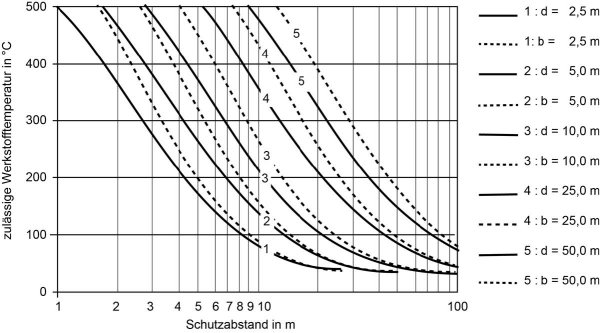
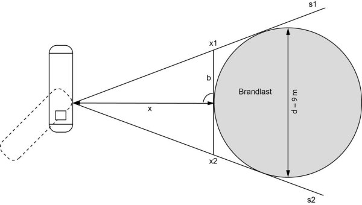
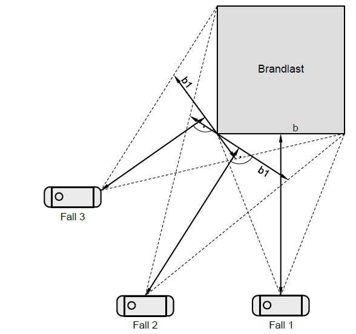

(1) Der Schutzabstand zwischen Brandlast und ortsfestem Druckgasbehälter in Abhängigkeit von der zulässigen Werkstofftemperatur ergibt sich aus Abbildung 5.
(2) Als zulässige Werkstofftemperatur wird die Temperatur eingesetzt, bei der die Sicherheit gegen die Streckgrenze gleich 1 ist. Man erhält sie, indem man die Streckgrenze bei der zulässigen Betriebstemperatur durch den Sicherheitsbeiwert (im allgemeinen 1,5) dividiert und mit diesem Streckgrenzenwert aus den Werk-stofftabellen die zugehörige Temperatur bestimmt. Tabelle 1 enthält Beispiele für ei-nige Stahlsorten.
Tabelle 1: Zulässige Werkstofftemperatur für einige Stahlsorten (für Wanddicken ≤ 16 mm)
Raumtemperatur in MPa |
in MPa |
temperatur in °C |
||

Abbildung 5: Schutzabstand als Funktion der zulässigen Werkstofftemperatur
Randbedingungen: Flammenintensität 10 W/cm2 (z. B. Dieselkraftstoff); Brandfläche π (d/2)2 oder b ∙ b in m2
(3) Das Diagramm „Schutzabstand als Funktion der zulässigen Werkstofftempera-tur“ aus Abbildung 5 wurde für das Brandmedium Dieselkraftstoff in Abhängigkeit von Brandlastdurchmesser d (runde Brandlasten) bzw. Brandlastbreite b (eckige Brand-lasten) berechnet. Da nur wenige Stoffe, z. B. Pentan, eine größere Flammenintensi-tät (emittierte Wärmestrahlung > 10 W/cm2) als Dieselkraftstoff haben, sind Brände von z. B. Kunststoff, Holz, Stroh aufgrund ihrer geringeren Flammenintensität bzw. der kurzen Branddauer bei der Abstandsmessung durch das Diagramm auch abge-deckt. Weiterhin wurden bei der Berechnung des Diagramms die Flammenlänge (wirksame Flammenhöhe) sowie die Brandlasttiefe integriert und können bei der praktischen Anwendung unberücksichtigt bleiben.
(4) Ist Flammenberührung vermieden, kann der Einfluss des Windes auf die Flam-mengeometrie vernachlässigt werden, da mit den Bemessungen für das Diagramm die maximale Einstrahlung berücksichtigt ist.
(5) Brandlasten oberhalb der Scheitelhöhe des Behälters, z. B. Dachstuhlbrand, sind durch die vorliegenden Werte abgedeckt, da die Einstrahlwerte in diesen Fällen geringer sind.
(6) Bei der Ermittlung des erforderlichen Schutzabstandes ist die Größe und Auf-stellung des ortsfesten Druckgasbehälters vernachlässigbar. Entscheidend ist der Punkt des Behälters, der der Brandlast am nächsten liegt, da die Strahlungsintensität auf den Behälter mit dem Quadrat der Entfernung abnimmt – siehe Abbildung 6.
(7) Bei außermittiger Anordnung der ortsfesten Druckgasbehälter zu eckigen Brandlasten – siehe Abbildung 7, Fall 2 und 3 – sind die erforderlichen Schutzab-stände aus dem Diagramm über die Hilfsbreiten b1 zu bestimmen.
(8) Hat die Brandlast eine größere Flammenintensität als Dieselkraftstoff oder sol-len die Abstände zur Brandlast genau berechnet werden, so kann dies nach dem erstellten Rechnungsprogramm (siehe Anhang 2 Absatz 3 Nr. 2) erfolgen.
(9) Die Bemessung des Sicherheitsventils muss für den Wärmeeintrag bei der er-mittelten zulässigen Werkstofftemperatur so erfolgen, dass ein Druckanstieg über den Auslegungsdruck des ortsfesten Druckgasbehälters hinaus nicht möglich ist. Basis für die genannten Bemessungen sind Brandlastversuche an Flüssiggaslagerbehältern.
(10) Beispiel:

Abbildung 6: Schutzabstand zu runden Brandlasten

Abbildung 7: Schutzabstand zu eckigen Brandlasten